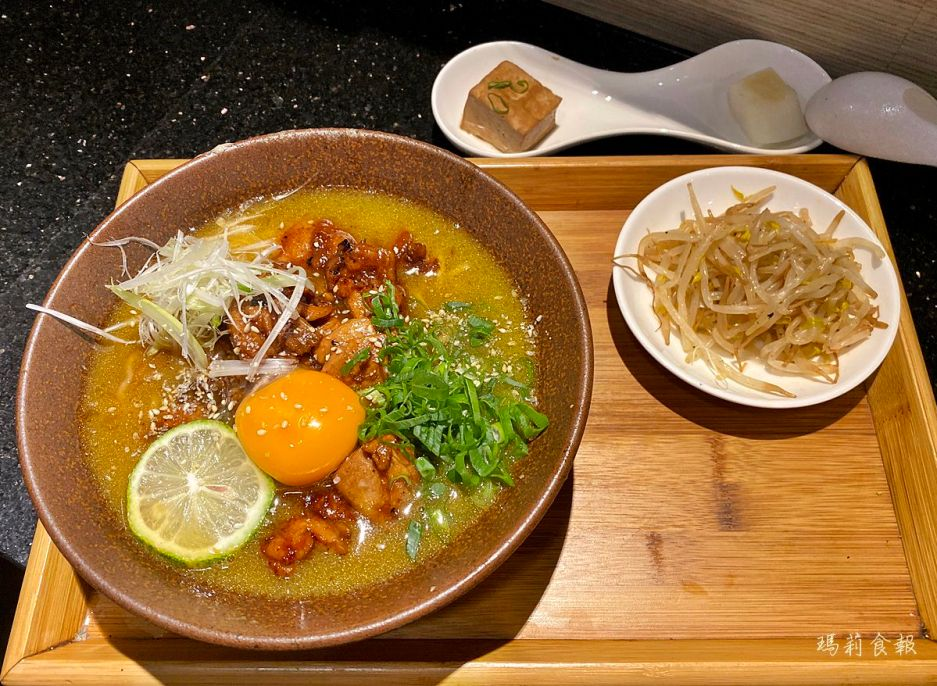
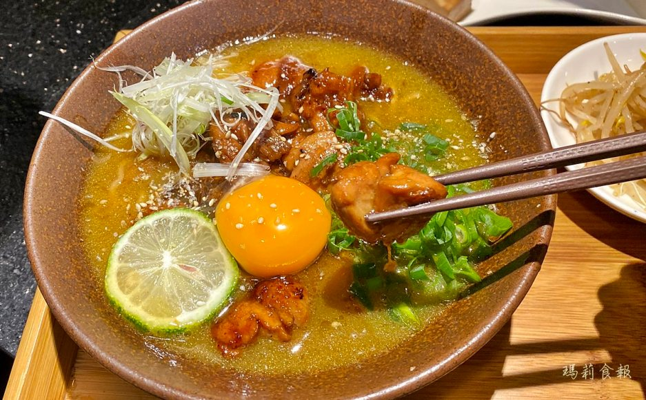
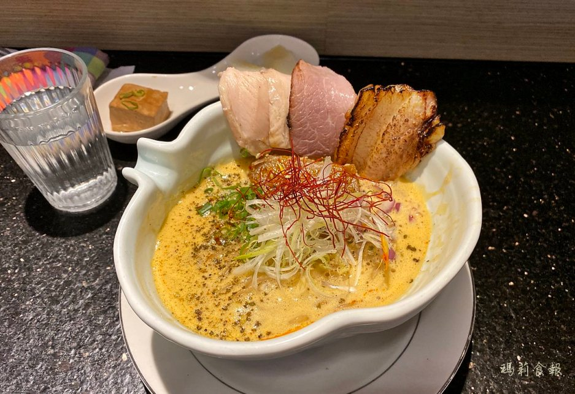
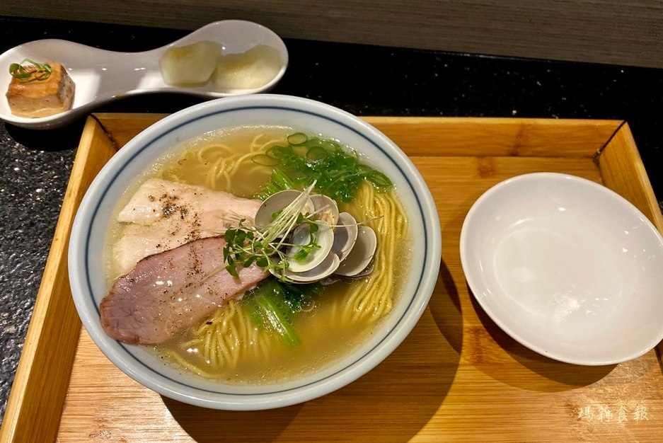

台中拉麵地圖網
地址:
有囍拉麵位在中山路上，若不是走在走廊裡，還挺容易錯過的；但相隔幾個店面就是赫赫有名的 宮原眼科第四信用合作社 ，所以就算錯過了，回頭幾步還是找得到的。
商品:
【德島拉麵＄240】

湯頭要跟著麵條一起大口吸進嘴裡，裹滿湯汁的稍硬麵條好Q彈，鹹歸鹹，卻不會死鹹，剛剛好的鹹香，還有淡淡的蛋香，風味棒極了！

Q香的雞頸肉，超威超好吃，吃完最後一塊，就好後悔點餐時沒按增量的選項。
【辛口濃醬油雞白湯拉麵 ＄230】

濃濃的雞白湯頭好香，經過舌頭時感覺到一層稠稠的奶香，落喉後麻辣的尾勁香而不嗆，邊吃麵邊享用湯頭，喝著喝著湯頭的風味會漸出現更細緻的層次。
【鹽味琥珀雞貝拉麵 ＄200】

湯頭由昆布與鮮甜的貝類湯底與和雞骨雞腳、龍骨豬腳一起熬煮的湯底所組合，海鮮的甜味較突出些，喝起來溫潤清爽。但比較我們前面兩碗麵的湯頭後，太淡了!
地圖: